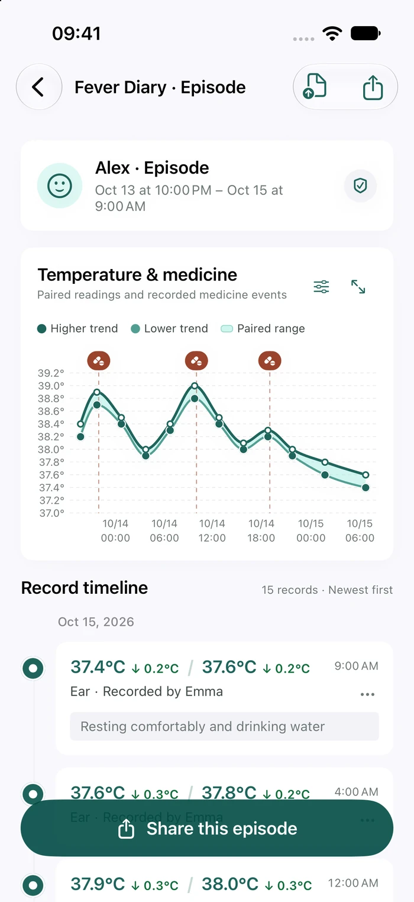
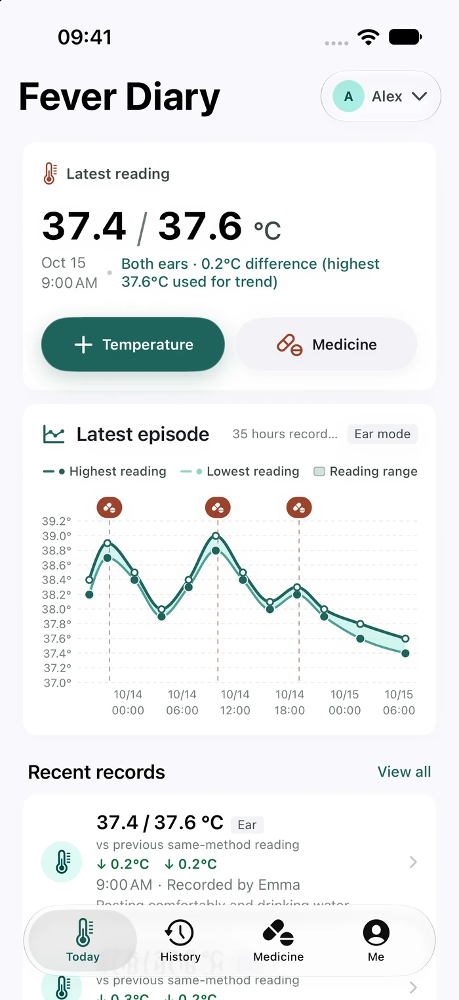
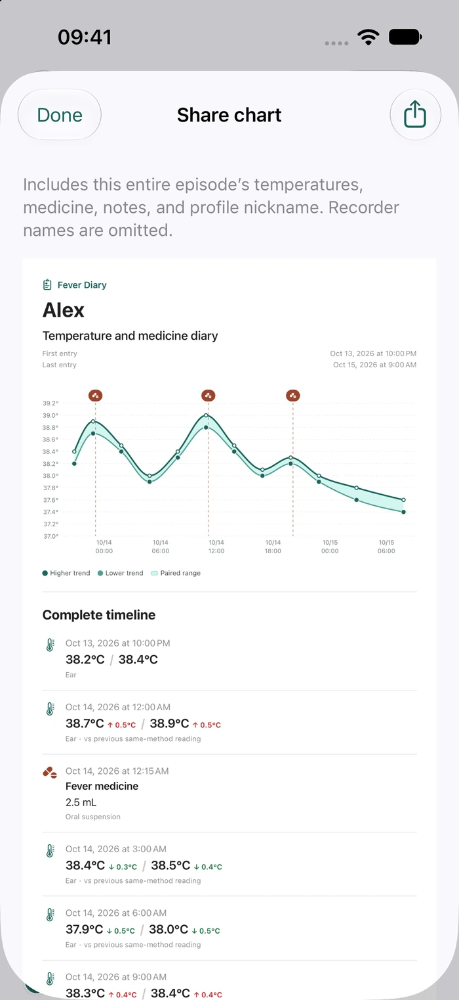
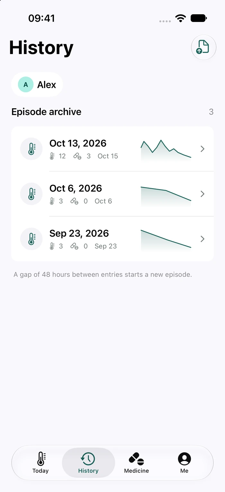

YOUR EVERYDAY DIARY
Start with your own care.
Keep temperatures and medicines together, without searching through scattered notes and messages.
FEVER DIARY · MADE FOR EVERY MOMENT OF CARE
Temperatures, medicines, and notes. One timeline.
From a single reading to the whole story of care.
iPhone and iPad · iOS 17 or later


SMALL DETAILS. A CLEARER PICTURE.
Keep it simple when you’re busy caring.
Keep the details ready when you need them.
Manually log ear or underarm temperatures, choose a saved medicine, and adjust its actual dose and time. Add earlier entries whenever you need to.
Temperatures and medicines come together on one chart. Entries form episodes based on the gaps between them. Zoom the timeline or turn your device for a wider view.
FOR YOU. FOR THE PEOPLE YOU CARE FOR.
Record. Review. Share.
Keep the story of care together.
YOUR EVERYDAY DIARY
Keep temperatures and medicines together, without searching through scattered notes and messages.

REVIEW & EXPORT
A chart image, a PDF, or a CSV. Organize what you need, then choose where to save or share it.

CARE TOGETHER
Premium adds multiple profiles and lets you invite family to selected profiles through iCloud.
Each collaborator needs Premium. iCloud updates may be delayed.
PERSONAL BY DESIGN
Start on your device. Choose whether to enable iCloud. No advertising, no third-party behavioral analytics, and no separate server receiving your health entries.
Read about data & privacyNo app-specific account needed.
Invite only people you trust.
Files are generated on your device.
A SIMPLE CHOICE
Choose Premium when you need to care for more people.
A thoughtful diary for your own care.
One personal profile
A personal record for everyone you care for.
Purchase · no subscription
No auto-renewal. Each collaborator needs Premium. Final price is shown in your region’s App Store purchase confirmation (¥18 in China).
Free includes one personal profile, temperature and medicine entries, your full history, chart sharing, and PDF and CSV export. Premium unlocks multiple profiles and family collaboration.
You can use the app on your device without an app-specific account or iCloud. Sign in to system iCloud and enable the relevant features when you want cross-device sync or family collaboration.
With Premium, invite family to a selected profile through iCloud. Each participant needs Premium. Updates may be delayed and are not suitable for real-time monitoring. See the privacy policy for sharing permissions.
Fever Diary is a manual record-keeping tool. It does not connect to thermometers, provide real-time monitoring, or recommend diagnoses, medicine timing, or doses. Saved medicine presets are entered by you.
Keep the details close with Fever Diary.
Downloads will open after approval. For iPhone and iPad. Free to start.
Need a hand? Get in touch